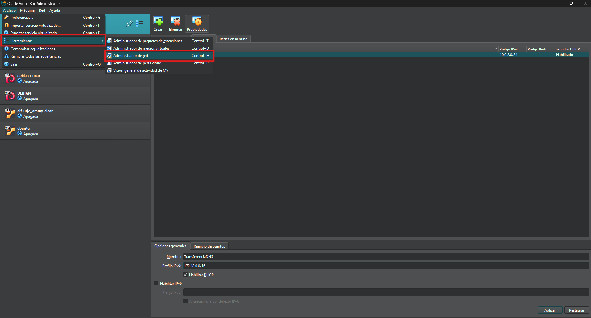

PRÁCTICA DNS
Configuración de infraestructura DNS maestro/esclavo en dos servidores Ubuntu.
Crear una red NAT en VirtualBox para que las máquinas virtuales se comuniquen: Dentro del administrador de red crearemos una nueva red NAT llamada TransferenciaDNS. IPv4: 172.18.0.0/16 y habilitar DHCP
Aquí detalla los pasos para configurar el hardware.
Describe la configuración de red necesaria.
Actualizar la lista de repositorios de APT:
Explica la configuración de BIND y las zonas DNS.
Guía para la configuración de una zona directa.
Guía para la configuración de una zona inversa.
Describe los pasos para verificar la configuración.